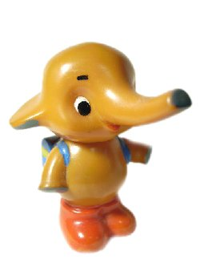

サトちゃん コレクション
昭和から平成まで、薬局の店頭を彩ったサトちゃんたちのソフビグッズです。
サトちゃんSA-8型
昭和レトロ
昭和36年以降に活躍していたモデル。モダンプラスチック製。手塗りの眉毛がマジックペン描きなのも、この時代ならではの良い味です。
入手：2001年
ランドセルサトちゃん
貯金箱
眉毛の個体差が激しく、中には「ケンシロウ」のような強面も（笑）。手塗りの赤い靴の裏には「MODERN PLASTICS JAPAN」の刻印があります。
入手：2002年
ドクターサトちゃん
20世紀ファイナル
20世紀ファイナルカーニバルのもの。当時はニセモノも存在しましたが、本物はやっぱり造形がしっかりしていますね。
入手：2003年
サトちゃん指人形
原点
私が一番最初に手にした思い出のサトちゃん。1992年春のカーニバル。この下がり眉毛がなんとも言えず可愛いんです。
入手：1992年